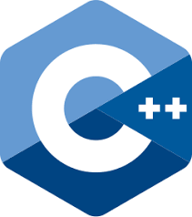
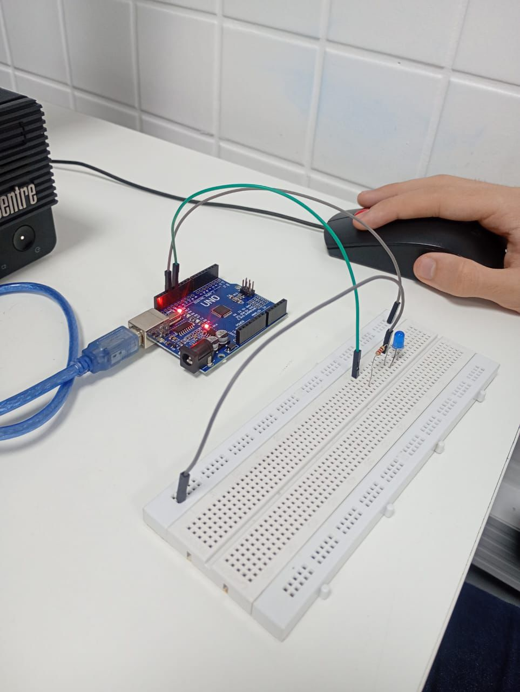
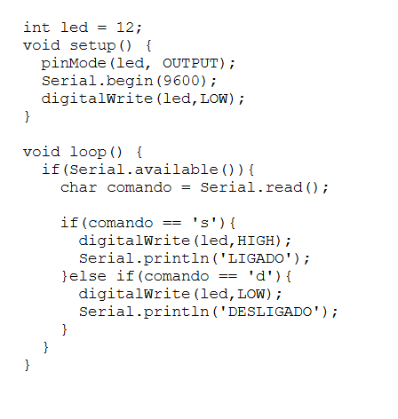

🚀 Desenvolvimento de Sistemas
Criamos soluções personalizadas para sua empresa com as mais modernas tecnologias de programação e banco de dados.
⚡ Eletrônica Embarcada
Desenvolvemos sistemas Arduino e IoT para automação industrial e residencial com sensores e componentes eletrônicos.
🔧 Algoritmos Avançados
Implementamos algoritmos eficientes de ordenação, busca e processamento de dados para otimizar seus processos.
Nossos Serviços
Linguagens de Programação
C++
Linguagem de programação de alto desempenho, ideal para sistemas embarcados, jogos e aplicações que exigem velocidade máxima. Oferece controle total sobre hardware e memória.

JavaScript
Linguagem essencial para desenvolvimento web, tanto frontend quanto backend (Node.js). Permite criar interfaces interativas e aplicações web modernas e responsivas.

Java
Linguagem robusta e multiplataforma, perfeita para aplicações empresariais, sistemas distribuídos e desenvolvimento Android. "Write once, run anywhere".
Python
Linguagem versátil e de fácil aprendizado, excelente para ciência de dados, inteligência artificial, automação e desenvolvimento web rápido.

PHP
Linguagem especializada em desenvolvimento web backend, ideal para sites dinâmicos, sistemas de gerenciamento de conteúdo e e-commerce.

Tecnologias Web
HTML (HyperText Markup Language)
Linguagem de marcação que estrutura o conteúdo das páginas web. Define elementos como títulos, parágrafos, links, imagens e formulários, formando a base de qualquer site.
CSS (Cascading Style Sheets)
Linguagem de estilo que controla a apresentação visual das páginas web. Define cores, fontes, layouts, animações e responsividade para diferentes dispositivos.
Banco de Dados
MySQL
Sistema de gerenciamento de banco de dados relacional open-source, ideal para aplicações web de médio e grande porte. Oferece alta performance e confiabilidade.
PostgreSQL
Banco de dados objeto-relacional avançado, com recursos sofisticados como tipos de dados customizados, indexação avançada e conformidade com padrões SQL.
MongoDB
Banco de dados NoSQL orientado a documentos, perfeito para aplicações modernas que lidam com dados não estruturados e necessitam de escalabilidade horizontal.
SQLite
Banco de dados leve e embarcado, ideal para aplicações móveis, IoT e sistemas que precisam de armazenamento local sem servidor dedicado.
Ambientes de Desenvolvimento (IDEs)
Visual Studio Code
Editor de código gratuito e extensível da Microsoft, com suporte a múltiplas linguagens, debug integrado e vasto ecossistema de extensões.
IntelliJ IDEA
IDE poderosa para desenvolvimento Java e outras linguagens JVM, com recursos avançados de refatoração, análise de código e integração com ferramentas de build.
Arduino IDE
Ambiente de desenvolvimento simplificado para programação de microcontroladores Arduino, com compilador integrado e upload direto para placas.
Algoritmos e Lógica Computacional
Fluxogramas
Fluxogramas são representações gráficas de algoritmos que mostram o fluxo de execução de um programa através de símbolos padronizados:
- Oval: Início e fim do algoritmo
- Retângulo: Processamento ou operação
- Losango: Decisão ou condição
- Paralelogramo: Entrada ou saída de dados
- Setas: Direção do fluxo
Algoritmos Fundamentais
Bubble Sort (Ordenação por Bolha)
Algoritmo simples que compara elementos adjacentes e os troca se estiverem na ordem errada:
algoritmo bubbleSort
var
vetor: vetor[1..10] de inteiro
i, j, temp, n: inteiro
inicio
n := 10
para i de 1 ate n-1 faca
para j de 1 ate n-i faca
se vetor[j] > vetor[j+1] entao
temp := vetor[j]
vetor[j] := vetor[j+1]
vetor[j+1] := temp
fimse
fimpara
fimpara
fim
Busca Linear
Percorre sequencialmente cada elemento até encontrar o valor procurado:
algoritmo buscaLinear
var
vetor: vetor[1..10] de inteiro
valor, i: inteiro
encontrado: logico
inicio
encontrado := falso
para i de 1 ate 10 faca
se vetor[i] = valor entao
encontrado := verdadeiro
escreva("Valor encontrado na posição ", i)
fimse
fimpara
se nao encontrado entao
escreva("Valor não encontrado")
fimse
fim
Busca Binária
Algoritmo eficiente para vetores ordenados que divide pela metade a cada iteração:
algoritmo buscaBinaria
var
vetor: vetor[1..10] de inteiro
valor, inicio, fim, meio: inteiro
encontrado: logico
inicio
inicio := 1
fim := 10
encontrado := falso
enquanto inicio <= fim e nao encontrado faca
meio := (inicio + fim) div 2
se vetor[meio] = valor entao
encontrado := verdadeiro
escreva("Valor encontrado na posição ", meio)
senao
se valor < vetor[meio] entao
fim := meio - 1
senao
inicio := meio + 1
fimse
fimse
fimenquanto
fim
Conceitos Fundamentais
Portugol e Portugol Studio
Portugol é uma pseudolinguagem que utiliza português estruturado para ensinar lógica de programação. É uma ponte entre o pensamento humano e as linguagens de programação reais.
Portugol Studio é um ambiente de desenvolvimento integrado (IDE) que permite escrever, executar e depurar algoritmos em Portugol, facilitando o aprendizado de programação.
Variáveis e Constantes
Variáveis
Espaços de memória que armazenam dados que podem ser modificados durante a execução do programa. Exemplo: idade, nome, contador.
Constantes
Valores fixos que não se alteram durante a execução. Exemplo: PI = 3.14159, TAXA_JUROS = 0.05.
Tipos de Dados
Inteiro
Números sem casas decimais: -100, 0, 42, 1000
Real
Números com casas decimais: 3.14, -2.5, 0.001
Caracter
Um único caracter: 'A', 'x', '5', '@'
Cadeia (String)
Sequência de caracteres: "Hello World", "Davi"
Lógico (Boolean)
Valores verdadeiro ou falso: verdadeiro, falso
Vetor
Conjunto de elementos do mesmo tipo: [1,2,3,4,5]
Exemplos Práticos em JavaScript
Script para Ordenação de Números
// Ordenação de números de 1 a 20
let numeros = [];
for(let i = 1; i <= 20; i++) {
numeros.push(i);
}
// Ordem crescente (já está)
console.log("Crescente:", numeros);
// Ordem decrescente
let decrescente = [...numeros].reverse();
console.log("Decrescente:", decrescente);
// 10 números aleatórios de 1 a 20
let aleatorios = [];
for(let i = 0; i < 10; i++) {
aleatorios.push(Math.floor(Math.random() * 20) + 1);
}
aleatorios.sort((a, b) => a - b);
console.log("10 números aleatórios ordenados:", aleatorios);
Soma de Array e Matriz
// Somar 10 números aleatórios de 1 a 220
let numeros = [];
let soma = 0;
for(let i = 0; i < 10; i++) {
let num = Math.floor(Math.random() * 220) + 1;
numeros.push(num);
soma += num;
}
console.log("Números:", numeros);
console.log("Soma:", soma);
// Matriz 3x3 com números aleatórios de 1 a 20
let matriz = [];
for(let i = 0; i < 3; i++) {
matriz[i] = [];
for(let j = 0; j < 3; j++) {
matriz[i][j] = Math.floor(Math.random() * 20) + 1;
}
}
console.log("Matriz 3x3:", matriz);
Calculadoras Práticas
Componentes Eletrônicos e Sistemas
Componentes Eletrônicos
Resistor
Componente que limita a passagem de corrente elétrica. Usado para controlar tensão, dividir corrente e proteger circuitos. Medido em Ohms (Ω).
Diodo LED
Diodo emissor de luz que converte energia elétrica em luz. Amplamente usado em indicadores, iluminação e displays. Possui polaridade definida (anodo e catodo).
Transistor
Dispositivo semicondutor usado como interruptor eletrônico ou amplificador. Tipos principais: BJT (bipolar) e FET (efeito de campo).
Circuito Integrado
Chip que contém milhares ou milhões de componentes miniaturizados. Exemplos: microprocessadores, memórias, amplificadores operacionais.
Sensores para Automação
Sensor de Temperatura
Mede temperatura ambiente. Tipos: DS18B20 (digital), LM35 (analógico), DHT22. Aplicações: controle climático, monitoramento industrial.
Sensor de Umidade
Detecta umidade do ar ou solo. DHT22 para ar, sensores capacitivos para solo. Usado em estufas, irrigação automática, climatização.
Sensor de Luminosidade
LDR (Light Dependent Resistor) ou fotodiodos. Aplicações: iluminação automática, painéis solares, sistemas de segurança.
Sensor de Movimento
PIR (Passive Infrared) detecta movimento por calor corporal. Usado em sistemas de segurança, iluminação automática, contadores de pessoas.
Arduino - Eletrônica Embarcada
O que é Arduino?
Arduino é uma plataforma de prototipagem eletrônica open-source baseada em hardware e software flexíveis e fáceis de usar. Consiste em uma placa de circuito com microcontrolador e um ambiente de desenvolvimento para programação.
Para que serve?
- Automação residencial (controle de luzes, temperatura)
- Robótica e projetos educacionais
- IoT (Internet das Coisas) - sensores conectados
- Instrumentação e aquisição de dados
- Arte interativa e instalações
Vantagens:
- Fácil aprendizado e uso
- Grande comunidade e documentação
- Baixo custo e disponibilidade
- Multiplataforma (Windows, Mac, Linux)
Desvantagens:
- Processamento limitado comparado a computadores
- Memória restrita para projetos complexos
- Não é ideal para aplicações em tempo real crítico
Como funciona o Arduino?
O Arduino funciona através de um microcontrolador (geralmente ATmega328P) que executa código carregado via USB. O programa é escrito em C++ simplificado e compilado antes do upload.
Eletrônica Embarcada é um sistema computacional dedicado projetado para executar tarefas específicas, integrado ao hardware que controla. Diferente de computadores gerais, sistemas embarcados são otimizados para funções particulares.
Linguagem de Programação
O Arduino usa uma versão simplificada de C++, com bibliotecas específicas que facilitam o controle de hardware. A IDE Arduino abstrai muitas complexidades, tornando a programação acessível.
// Exemplo básico: Piscar LED
void setup() {
pinMode(13, OUTPUT); // Configura pino 13 como saída
}
void loop() {
digitalWrite(13, HIGH); // Liga LED
delay(1000); // Espera 1 segundo
digitalWrite(13, LOW); // Desliga LED
delay(1000); // Espera 1 segundo
}
Entradas e Saídas
Entradas/Saídas Digitais
Trabalham apenas com dois estados: HIGH (5V) e LOW (0V). Usado para:
- LEDs (saída)
- Botões (entrada)
- Relés (saída)
- Sensores digitais
Entradas/Saídas Analógicas
Trabalham com valores contínuos de 0 a 1023 (10 bits). Usado para:
- Sensores de temperatura
- Potenciômetros
- Sensores de luz (LDR)
- Controle PWM para motores
Cálculos e Scripts Eletrônicos
Lei de Ohm
A Lei de Ohm estabelece que V = I × R, onde V é tensão (Volts), I é corrente (Ampères) e R é resistência (Ohms).
Calculadora Lei de Ohm
function calcularTensao(corrente, resistencia) {
return corrente * resistencia;
}
function calcularCorrente(tensao, resistencia) {
return tensao / resistencia;
}
function calcularResistencia(tensao, corrente) {
return tensao / corrente;
}
console.log("Tensão (2A, 10Ω):", calcularTensao(2, 10) + "V");
console.log("Corrente (12V, 4Ω):", calcularCorrente(12, 4) + "A");
console.log("Resistência (9V, 3A):", calcularResistencia(9, 3) + "Ω");
Cálculo de Potência
Potência elétrica pode ser calculada usando P = V × I, P = V²/R ou P = I² × R
Calculadora de Potência
function potenciaTensaoCorrente(tensao, corrente) {
return tensao * corrente;
}
function potenciaTensaoResistencia(tensao, resistencia) {
return (tensao * tensao) / resistencia;
}
function potenciaCorrenteResistencia(corrente, resistencia) {
return corrente * corrente * resistencia;
}
// Exemplo: Lâmpada de 12V, 2A
let tensao = 12, corrente = 2;
console.log("Potência:", potenciaTensaoCorrente(tensao, corrente) + "W");
Programa Arduino Ligar led


Componentes de Rede e Servidores
Servidores Web
Computadores dedicados que hospedam sites e aplicações. Exemplos: Apache, Nginx, IIS. Características: alta disponibilidade, processamento robusto, armazenamento redundante.
Switch de Rede
Dispositivo que conecta múltiplos dispositivos em rede local (LAN). Gerencia tráfego de dados usando endereços MAC, criando domínios de colisão separados.
Roteador
Equipamento que conecta diferentes redes, direcionando pacotes de dados. Implementa NAT, DHCP, firewall e Wi-Fi em modelos residenciais.
Firewall
Sistema de segurança que monitora e controla tráfego de rede baseado em regras predefinidas. Pode ser hardware dedicado ou software.
Dispositivos IoT
Dispositivos conectados à internet: câmeras IP, sensores inteligentes, termostatos, lâmpadas smart. Comunicam via Wi-Fi, Bluetooth, Zigbee.
NAS (Network Attached Storage)
Servidor de armazenamento dedicado conectado à rede. Permite compartilhamento centralizado de arquivos, backup automático e acesso remoto.
Fundamentos de Redes
Componentes de uma rede local com cabo
- Switch
- Roteador
- Cabo Ethernet (Cat5e/Cat6)
- Patch panel (em infraestrutura maior)
Protocolos e modelos
Protocolo: conjunto de regras para comunicação (ex.: IP, TCP, UDP, HTTP).
Modelo OSI: 7 camadas — Física, Enlace, Rede, Transporte, Sessão, Apresentação, Aplicação.
Modelo TCP/IP: 4 camadas — Link, Internet, Transporte, Aplicação.
IPv4 vs IPv6
IPv4: endereços 32 bits (~4,3 bilhões). IPv6: endereços 128 bits (praticamente ilimitado), melhora roteamento e segurança em alguns pontos.
HTTP e HTTPS
HTTP é protocolo de aplicação para web. HTTPS = HTTP sobre TLS/SSL (criptografia e integridade).
Exemplo de configuração IP/TCP em backend Node.js
// Exemplo Node.js (Express) — endpoint simples
const express = require('express');
const app = express();
app.use(express.json());
app.post('/mensagem', (req, res) => {
const body = req.body;
console.log('Recebido:', body);
res.json({status:'ok', recebido: body});
});
app.listen(3000, () => console.log('API rodando em http://localhost:3000'));
Em backend não "configura-se" IP/TCP diretamente no código — o sistema operacional e o ambiente de rede fornecem as informações. O código apenas abre uma porta para aceitar conexões.
Frameworks Node.js para HTTP
- Express — o mais popular e minimalista
- Fastify — foco em performance
- Koa — middleware moderno
3 exemplos Backend ↔ Frontend
// 1) GET simples
app.get('/ping', (req,res)=> res.send('pong'));
// 2) POST que recebe JSON
app.post('/login', (req,res)=>{ const u = req.body.user; res.json({token:'abc123', user:u}); });
// 3) Endpoint que lista dados (simulado)
app.get('/alunos', (req,res)=> res.json([{id:1,nome:'Davi'},{id:2,nome:'Maria'}]));
Entre em Contato